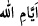

“
(Allah’ın günleri)”, hakîkatte Allah’ın var olduğu ve O’nunla birlikte dünyâ ve
âhiret günlerinden hiçbir şeyin bulunmadığı günlerdir.
Şu halde sâlike düşen, Allah Teâlâ’nın gizli ilmindeki varlığını tefekkür, sonra
tezekkür etmek; gün ve gece ile kayıtlanmış mecâzî varlıktan çıkmak; günü ve gecesi
olmayan hakîkî varlığa ermektir.
“Şüphesiz bunda” yâni Allah’ın günlerinde, Allah’a itâate ve belâlara ziyâdesiyle
“çok sabreden,” O’nun nîmet ve ihsanlarına ziyâdesiyle “çok şükreden herkes için”
Allah’ın birliğine, kudretine, ilim ve hikmetine delâlet eden büyük ya da çok sayıda
“âyetler vardır.”
Bir bakıma “…her kâmil mümin için...” denilmiş olmaktadır. Çünkü îmân, iki
yarımdan ibârettir. Bir yarısı sabır, diğer yarısı da şükürdür.
Buradaki âyetlerden sâdece mü’minlerin ibret alacağının söylenmesi, bu âyetlerin
başkaları tarafından görülmemesinden değil, sâdece mü’minler onlardan faydalandığı
içindir. Çünkü bu âyetler herkese açıklanmıştır. Şükür sabrın sonucu olduğundan dolayı
âyette sabır önce zikredilmiştir.
Bir mutluluk vardır her ağlamanın sonunda.
Kavimlerini uyarıp onlara öğüt verenler, ezâ ve belâlara sabrettikleri için zafere
ermişlerdir. Çünkü “İyi sonuç takvâ sâhiplerinindir.” (el-A‘râf, 7/128) Uyarılan ve
öğüt verilenler ise âsîliklerine ve sapıklıklarına devam ettikleri için helâk edilmiştir.
“O zâlimler topluluğunun canı cehenneme!” (Hûd, 11/44).
Mesnevî’de şöyle denilir:
Akıllı insan şu varlıktan da geçer, hırs ve gururu da bırakır,
Firavunların, Âd kavminin başına gelenleri duyunca.
Varlıktan, kendini büyük görmekten, hırstan vazgeçmezse,
Bu sefer onun halinden, onun sapıklığından başkaları ibret alır.
6. Hani Mûsâ kavmine demişti ki: “Allah’ın üzerinizdeki nîmetini hatırlayın.
Çünkü O, sizi işkencenin en kötüsüne sürmekte ve oğullarınızı kesip, kadınlarınızı
(kızlarınızı) bırakmakta olan Firavun âilesinden kurtardı. İşte bu size
anlatılanlarda, Rabbinizden büyük bir imtihan vardır.”
“Hani Mûsâ kavmine demişti ki:” Yâni, ‘Ey yaratılmışların en üstünü! Mûsâ’nın,